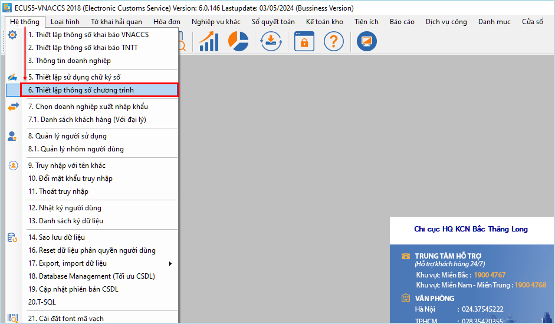
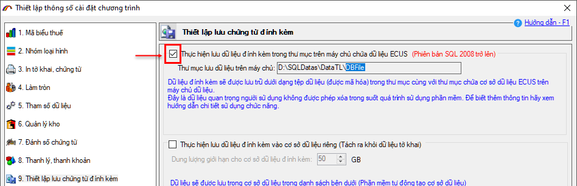
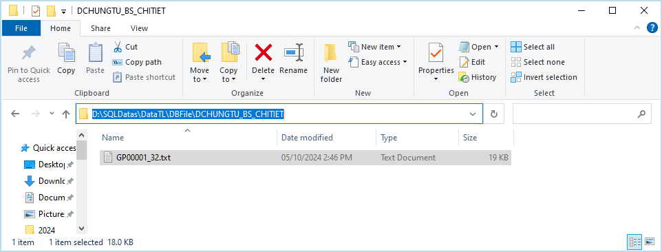
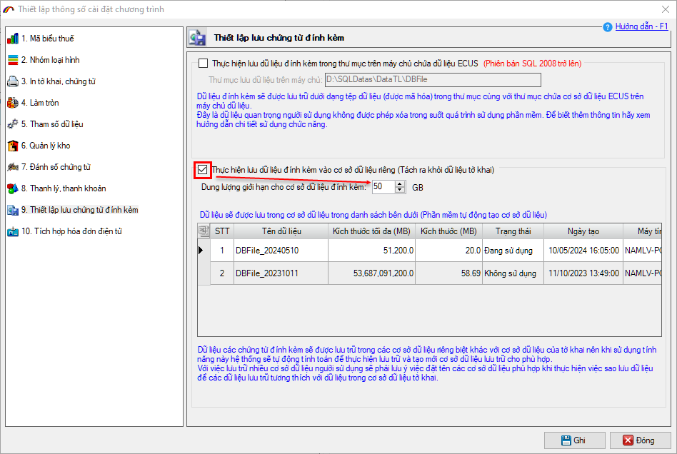
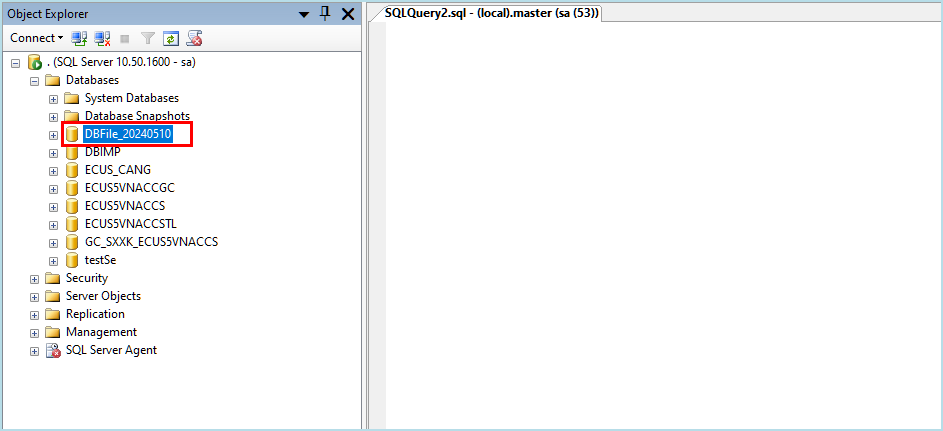

Chức năng thiết lập lưu chứng từ đính kèm, cho phép doanh nghiệp cấu hình để lưu các chứng từ đính kèm của tờ khai ra thư mục hoặc lưu vào một cơ sở dữ liệu (CSDL) riêng biệt, khác với cơ sở dữ liệu của chương trình. Điều này sẽ làm giảm dung lượng CSDL chính của chương trình, cải thiện tốc độ truy cập và các thao tác trong quá trình khai báo.

Để sử dụng chức năng này, doanh nghiệp cần thực hiện nâng cấp phần mềm lên phiên bản mới nhất. Sau đó vào menu Hệ thống / Thiết lập thông số cài đặt chương trình.

Chức năng cung cấp cho người dùng 2 lựa chọn:
Lựa chọn 1: Lưu dữ liệu đính kèm thành các tệp (được mã hóa) vào thư mục cùng với thư mục chứa CSDL chương trình đang chạy.
Với lựa chọn này, bạn chỉ cần đánh dấu tích chọn vào Thực hiện lưu dữ liệu đính kèm trong thư mục trên máy chủ chứa dữ liệu ECUS, phần mềm sẽ tự động lấy đường dẫn của thư mục dữ liệu trên máy chủ + thêm thư mục con tên là DBFile như hình dưới đây.

Mỗi khi thực hiện khai báo bổ sung chứng từ đính kèm, phần mềm sẽ lưu thành các tệp mã hóa, với tên là tên của file chứng từ đính kèm + ID chứng từ:

Lưu ý:
- Chức năng lưu dữ liệu đính kèm ra file vào thư mục chỉ áp dụng đối với CSDL chạy trên phiên bản SQL 2008 trở lên.
- Đây là các dữ liệu quan trọng, người dùng không được xóa trong suốt quá trình sử dụng phần mềm. Nếu dữ liệu bị xóa sẽ dẫn đến không xem lại được các chứng từ đã đính kèm của tờ khai.
- Chức năng lưu dữ liệu đính kèm ra file vào thư mục chỉ áp dụng đối với CSDL chạy trên phiên bản SQL 2008 trở lên.
- Đây là các dữ liệu quan trọng, người dùng không được xóa trong suốt quá trình sử dụng phần mềm. Nếu dữ liệu bị xóa sẽ dẫn đến không xem lại được các chứng từ đã đính kèm của tờ khai.
Lựa chọn 2: Lưu dữ liệu đính kèm vào CSDL riêng, tách ra khỏi CSDL khai báo.
Với lựa chọn này, bạn đánh dấu tích chọn vào mục Thực hiện lưu dữ liệu đính kèm vào cơ sở dữ liệu riêng, thiết lập dung lượng tối đa cho CSDL riêng này.

CSDL riêng được tạo ra với cấu trúc tên CSDL: DBFile_Ngày tạo (YYYYMMDD). Ví dụ: DBFile_20240510
Lưu ý, cơ sở dữ liệu riêng này sẽ được tự động tạo ra khi bạn thực hiện khai báo chứng từ đính kèm lần đầu, tính từ thời điểm thiết lập lưu dữ liệu đính kèm vào CSDL riêng.

Bản quyền © thuộc về Công ty TNHH Phát triển công nghệ Thái Sơn